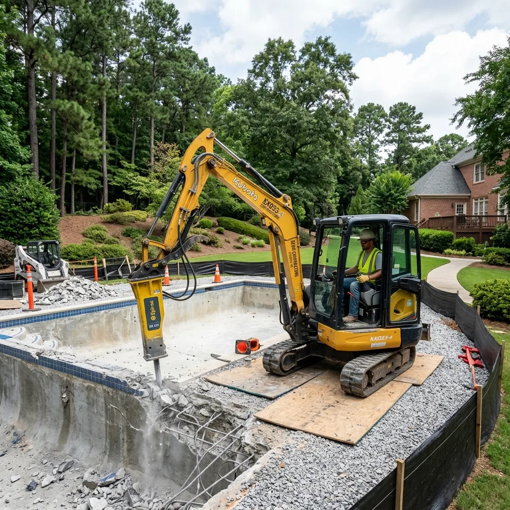
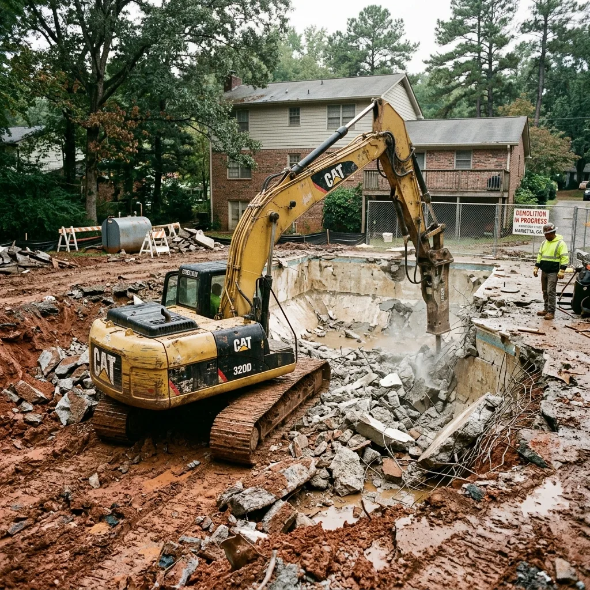
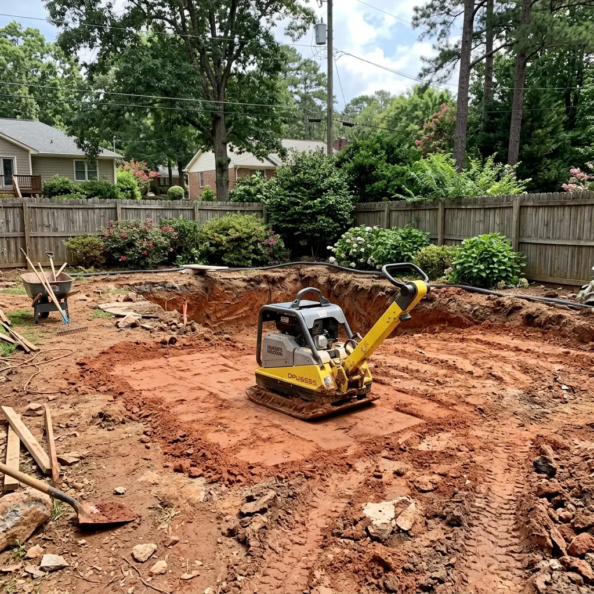
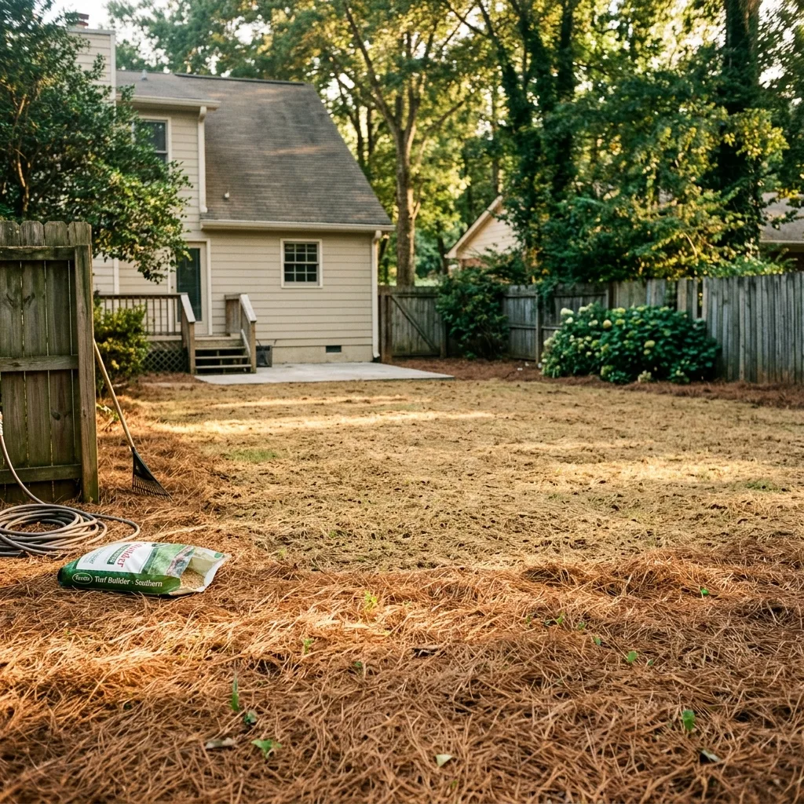

Efficient, clean-site demolition with commercial-grade equipment and Georgia-clay focus.
Ballpark Range:
Demolishing a pool in Fulton, DeKalb, or Cobb County requires specific engineering knowledge. Permit requirements for residential demolition in North Georgia vary between municipalities, typically ranging from $150–$350.
✓ Fulton County: Requires a site plan for structural material disposal.
✓ DeKalb County: Focuses on sediment control and grading for clay soil.
✓ Cobb County: Enforces certified backfill compaction standards.
In the heavy clay soils of Metro Atlanta, our demolition process includes specialized engineered backfill and soil compaction testing to ensure your site is structurally sound for future foundations.

We specialize in the surgical-level destruction of gunite, vinyl, and fiberglass shells as part of our process for Atlanta Pool Demolition Company. Our teams understand the unique constraints of neighborhoods like Buckhead and Decatur.
From the initial permit filing through to final geotechnical compaction, we provide a clean, controlled process that transforms your backyard into a permanent, stabilized asset.
Demolishing an in-ground swimming pool is more than a simple backyard digging job. It is a complex geotechnical site restoration that requires understanding soil mechanics, civil hydrology, and heavy equipment logistics. Below is the step-by-step technical standard we follow to restore residential lots to 100% stable, buildable condition across Metro Atlanta.
Before heavy machinery rolls onto your lawn, our engineers coordinate a comprehensive site check. This starts by contacting Georgia 811 (Call Before You Dig) to locate and mark all public underground utilities, including natural gas mains, water lines, electric wires, and telecommunications cabling. Our team manually traces secondary private lines, such as pool plumbing circuits, gas lines running to pool heaters, and electrical conduits feeding underwater lights.
We safely disconnect and cap all services. Plumbing lines are sealed with commercial water-tight plugs at the property line easement to prevent pressure drops or sewer gas leaks. Gas lines are purged, disconnected at the main meter, and capped in compliance with local utility safety codes. In historic neighborhoods like Decatur or Buckhead, we coordinate with city arborists to map the Critical Root Zones (CRZs) of mature trees, setting up temporary wood barriers and laying 1.5-inch thick polymer track protection mats to distribute the weight of the machinery and prevent soil compaction.
A critical error in pool demolition is failing to address the concrete basin's hydrology. When performing a partial pool removal—where only the top few feet of the pool walls are demolished and the remaining pool bottom is left in place—the remaining concrete acts as an impermeable basin. In clay soils, rainwater seeps down through the backfill but cannot escape, creating a hidden pool of saturated, unstable mud. This phenomenon, known as the **"Bathtub Effect,"** destroys soil stability and causes severe ground sinking, turning yards into spongy marshes and damaging nearby retaining walls and house foundations.
To prevent this, our protocol requires precise hydrostatic fracturing. We use heavy hydraulic impact breakers to punch 18-inch diameter drainage ports through the concrete pool floor every 4 feet across the entire basin, ensuring groundwater can drain naturally into the water table. We also place a 12-to-18-inch base layer of washed #57 stone (crushed granite) at the bottom of the pool shell. This aggregate layer acts as a subterranean drainage channel, guiding water away from the compacted soil and preventing saturation. This attention to detail is why our projects easily pass county inspections, ensuring long-term yard safety.
Once utilities are capped and drainage is secured, we begin structural demolition. For concrete and gunite pools, this requires systematically breaking the bond beam—the thick concrete ring at the top of the pool shell—and demolishing the walls down to a minimum depth of 36 inches below final grade. We use mini-excavators equipped with hydraulic hammer attachments to fracture the concrete, which is reinforced with heavy steel rebar grids. This process produces a massive volume of masonry debris, typically 60 to 80 tons for a standard residential pool.
For a full engineered removal, we extract the entire concrete shell, including all reinforcing steel and plumbing lines. We use heavy magnetic equipment to separate the steel rebar from the concrete fragments on-site. To support sustainability, we follow a 100% recycling protocol: all concrete and gunite debris is hauled to local recycling facilities, where it is crushed and repurposed as road base aggregate, while the steel is sent to metal reclamation facilities. If a partial removal is chosen, the broken concrete fragments are placed in the bottom of the pool shell, mixed with aggregate, and compacted, while the upper walls are removed, leaving a clean, builder-ready site.
Backfilling is the most critical phase for long-term site stability. Simply dumping dirt into the pool void will result in severe ground settling and sinkholes. We use soil compaction standards based on the Standard Proctor Compaction Test (ASTM D698). We test the backfill soil to identify its Optimum Moisture Content (OMC)—the precise moisture level that allows soil particles to be packed to their maximum dry density. In North Georgia, this means managing the characteristics of local soil types, such as Cobb's red clay or DeKalb's micaceous silt.
We import clean, organic-free structural fill dirt and lay it in thin, horizontal layers (lifts) no deeper than 6 to 8 inches. Each lift is mechanically compacted using walk-behind sheepsfoot rollers and vibratory trench compactors, which apply high-frequency impact force to knead clay and silt particles together, expelling air pockets. We target a minimum of 95% Modified Proctor density. For engineered removals, we provide a third-party geotechnical compaction certificate, which is required by local building inspectors to issue permits for future permanent structures like guest houses, garages, or patios over the filled area.
The final step in pool demolition is managing surface hydrology. Removing a large pool structure permanently changes how stormwater flows across your yard. In sloped Metro Atlanta neighborhoods, poor surface grading can cause erosion, wash away new sod, or redirect water toward your home's foundation or neighboring properties. This can lead to structural damage and create legal liabilities under Georgia's strict civil water laws.
We integrate hydrological grading into our final site work. We establish a 2% positive slope away from the home's foundation to redirect surface runoff. We construct custom surface swales—shallow, grassy channels with gentle side slopes—that guide water toward approved municipal drainage points or designated rain gardens. On steep properties, we install French drains containing perforated PVC pipe encased in aggregate filter sleeves and washed stone to collect and redirect subsurface water. Finally, we apply a layer of nutrient-rich topsoil, treat the ground with agricultural lime to balance clay acidity, and cover the area with premium seed and clean pine straw, leaving your yard beautiful, stable, and ready to enjoy.
Hiring a generic landscaping or grading contractor to demolish an in-ground swimming pool often seems like a cost-effective choice. However, without engineering-grade standards and precise soil management, homeowners frequently face severe, costly issues that ruin backyards and degrade property values. The most common pitfall is soil subsidence (ground settling). When a pool basin is backfilled without proper compaction equipment or moisture controls, air pockets remain trapped between the soil layers. Over the course of 12 to 24 months, rainwater filters down, collapsing these air pockets and causing the soil to sink. This results in uneven lawns, deep sinkholes, and structural hazards that make the yard unusable and require expensive remediation.
Another major issue is the "Bathtub Effect" (water saturation). When contractors fail to puncture the pool floor, or only drill a few small drainage holes, the remaining concrete acts as a giant underground basin. Water accumulates in the fill dirt, saturating the soil and turning the backyard into a spongy, muddy marsh. Stagnant subsurface water can also migrate laterally, exerting pressure and causing structural cracks in house foundations, basement walls, and nearby retaining walls.
Finally, a lack of documentation can halt property sales and building permits. Real estate transactions in Metro Atlanta often require disclosing any buried structures, such as abandoned pool shells. Without a certified compaction report showing 95% Modified Proctor density signed by a registered engineer, mortgage lenders may refuse loans, and building inspectors will deny permits for future construction (like decks, patios, or garages) on the site. Choosing an engineered, professional demolition protects your largest financial investment and guarantees a stable, buildable property for decades to come.

We break the entire pool shell into manageable pieces to ensure complete property restoration and structural stability.

We use local Georgia clay and clean soil mixes, layered and compacted to match the surrounding virgin ground.

The space is graded with seed and pine straw, ensuring perfect drainage across your new Northern Georgia landscape.